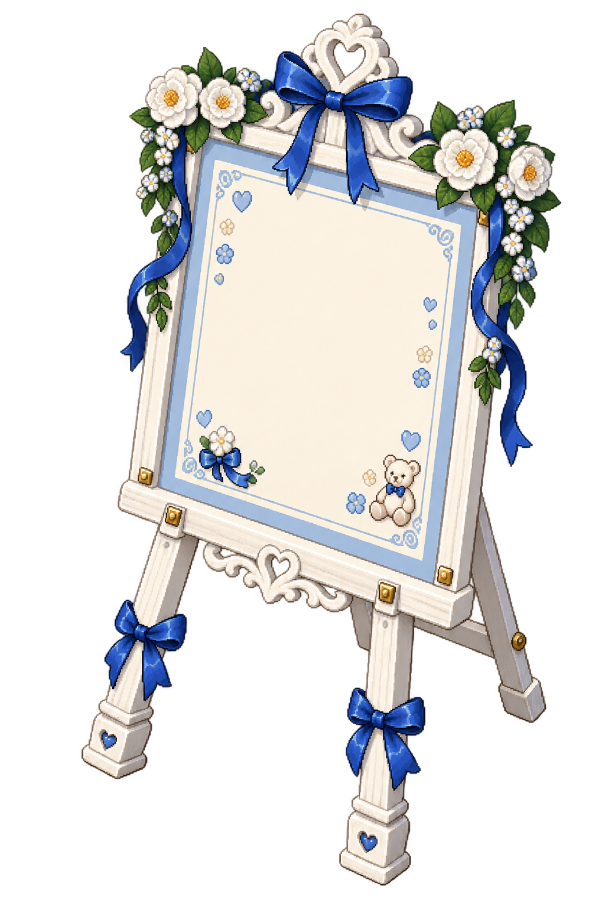

♡
A LITTLE BLUE WEDDING
伊薩克
＆
白冥
♫
換裝
藍色花園
歡迎來到我們的婚禮
伊薩克
白冥
鮑里斯
薩維里
狄安娜
▼
你
同行夥伴

貼紙祝福板
宴會廳 →
花園入口
點擊地面移動，走近新人打聲招呼吧
THE WEDDING CEREMONY
請迎接新娘
♡ ♥ ♡
略過動畫
交換主控
♡
互動
離開婚禮 · 拍張紀念照 ♡
WITH LOVE, ALWAYS
✧
ISAAC & BAIMING
YOU’RE INVITED
✦
今天，和誰一起來？
獨自赴約，或與一位夥伴分享幸福。
♙
單人前往
一個人的美好赴約
♙ ♙
雙人前往
同一支手機，兩人同行
挑選你的婚禮造型
你的造型
夥伴造型
✧
你的名字
身高
較高
與伊薩克一樣高
較矮
比白冥稍矮一點
膚色
髮型
俐落短髮
可愛短鮑伯
浪漫長捲髮
輕盈馬尾
齊瀏海長直髮
俐落油頭
側分短髮
雙邊辮子
雙馬尾
旁分長瀏海短髮
中分長直髮
髮色
瞳色
僅調整瞳色，保留眼白與高光
眼型
柔和圓眼
俐落銳眼
服裝
藍色西裝
藍色洋裝
白色西裝
白色禮裙
準備好了，入場觀禮 ♡
返回人數選擇
入場時播放結婚進行曲，可隨時關閉音樂
WEDDING MOMENTS
餵鮑里斯吃蘋果
送上祝福 ♡
繼續逛逛
YOUR LITTLE WEDDING CARD
我的貼紙祝福板
選貼紙後點一下畫布，也可以拖曳調整位置。作品只保存在這台裝置。
寫下你的祝福
復原
刪除選取貼紙
清空作品
完成並產生圖片
下載祝福圖片
回到婚禮
A MEMORY TO KEEP
把今天的幸福帶回家
正在準備你的紀念合照…
下載紀念照
也可以長按照片，儲存到手機。
重新產生照片
返回婚禮